62일간 전국에서 진행
희망 2026
나눔캠페인
"희망나눔 캠페인을 통해 이웃을 위한
따뜻한 마음을 전해보세요."
매년 연말연시에 진행하고 있는 희망나눔캠페인은 기존 ‘불우이웃돕기 성금모금’ 캠페인을 1999년 12월부터 희망찬 내년을 열어간다는 의미로 ‘희망’ 이라는 글자에 다음 연도를 표기하는 ‘희망2000이웃돕기캠페인’으로 변경했다가, 2007년 12월에 현재와 같은 희망나눔캠페인으로 정착했습니다.
일시기부로 참여하기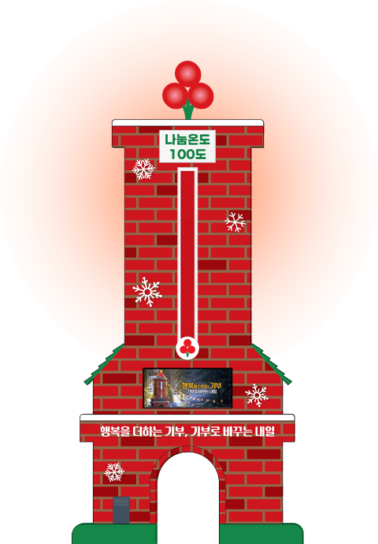
사랑의온도탑
캠페인의 상징이자 이웃사랑의 지표인 사랑의온도탑은 전국 17개 시도에 세워져 나눔목표액의 1%가 모일 때마다 나눔온도가 1도씩 올라가며 우리 이웃들의 사랑이 모이는 과정을 함께 지켜볼 수 있습니다. 올해 사랑의온도탑은 대국민 공모를 통해 선정된 작품 ‘굴뚝’을 모티브로 제작했으며 나눔의 온기가 굴뚝을 타고 퍼져 나간다는 의미를 담고 있습니다.
희망2026나눔캠페인
3대 지원분야
-
생활 안정
고립·위기 가구를 발굴해
기본생활 보장을 위한
지원체계 마련생활 안정복지 사각지대에 놓인 이웃의
기본생활 보장을 위한 지원체계를 마련하고,
고립·위기 가구를 발굴해 일상회복을 돕습니다.- 취약계층 및 복지 사각지대의 생활안정 지원
- 지역사회 내 위기·고립 1인가구 선제적 발굴 및 지원
- 갑작스러운 위기로 인한 저소득층 생계·주거·의료비 지원
-
역량 강화
교육·훈련·기술을 지원하고,
취약계층의 경제적 자립과
사회참여를 위한 기반 강화역량 강화전 세대가 자립·성장할 수 있도록
교육·훈련·기술을 지원하고, 취약계층의 경제적 자립과
사회참여를 위한 기반을 강화합니다.- 교육 취약계층의 진로 탐색 및 학습 지원, 교육 기자재 등 지원
- 시설거주 장애인의 기술훈련, 전환기 교육지원
- 취약계층의 경제적 자립·노동시장 참여 교육 등을 위한 인프라 지원
-
위기 대응
새로운 사회문제 맞춤 대응,
사회 안전망을 통한
위기 대응 지원위기 대응새로운 사회문제 맞춤 대응 및
대상 맞춤형 돌봄과 지역사회 안전망을 통해
신속하고 체계적인 위기 대응을 지원합니다.- 청소년 중독 예방, 청소년 생명존중 문화 확산 등 사회 이슈 대응
- 경계선 지능아동, 미등록 이주아동, 고령장애인 등 맞춤형 돌봄 지원
- 기후변화에 따른 재난 대응 및 에너지 빈곤가구 지원
여러분의 사랑을 보내주세요.
사랑의열매 사회복지공동모금회는 개인∙단체∙기업 기부자분들이 쉽고 즐겁게 나눔에 동참할 수 있도록 다양한 기부방법을 마련하고 있습니다.
개인기부
-
아너
소사이어티개인이 1억 원 이상 기부 또는 5년간 약정
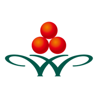
-
기부자 맞춤기금
개인이 10억 원 이상 기부 또는 10년간 약정
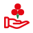
-
나눔리더
개인이 연간 100만 원 이상 기부 또는 약정
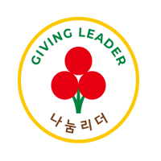
-
나눔
리더스클럽단체·모임 등이 3년 내 1,000만 원 이상
기부 또는 약정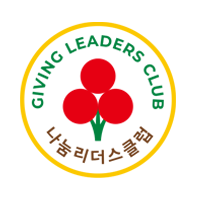
-
착한가게
자영업을 운영하는 개인사업자가
매월 3만원 이상 정기기부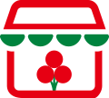
-
착한가정
가족 구성원이 함께 매월 2만원 이상 정기기부
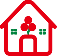
-
착한일터
직장인이 매달 급여에서 약정한 기부금을 정기기부
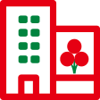
-
레거시클럽
유언자가 자신의 재산을 공익 목적을 위해
제3자에게 기부(유증)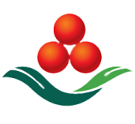
-
희망자산나눔
부동산, 증권, 보험 등 비현금성 자산 기부
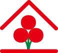
-
착한펫
반려동물의 이름으로 매월 2만 원 이상 정기기부
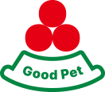
-
착한나눔
개인이 약정한 기부금을 매월 정기기부
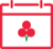
-
일시기부
간편결제(각종페이), 신용카드, 계좌이체,
ARS기부 등 일시 기부